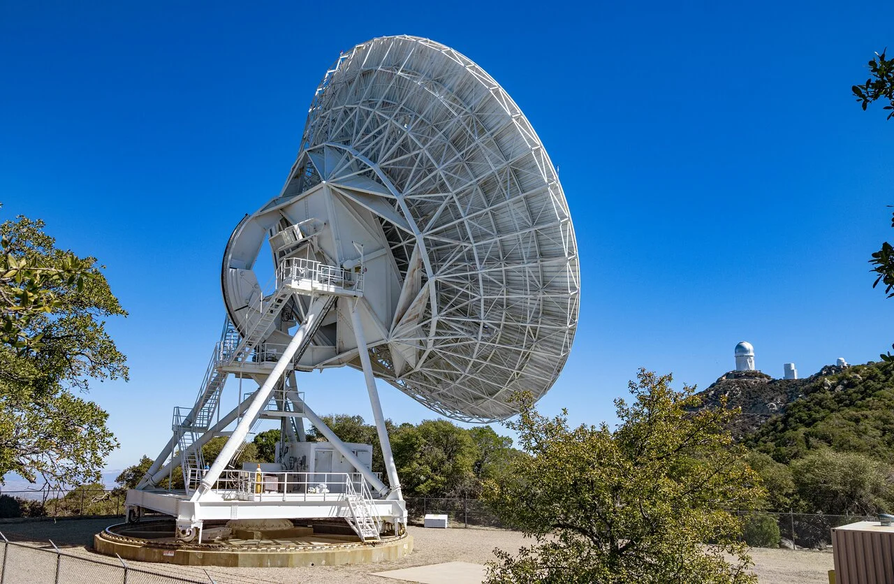

Environment
Where will the device operate and how will it be mounted?

01 / 08 ABOUT SANCT GROUP
RF engineering with the product in view. Antenna performance depends on the whole product, from the PCB and enclosure to the way it is mounted and used.
02 / 08 OUR APPROACH
Start by identifying the wireless standards, operating environment and size constraints. Use these requirements to compare designs, plan simulations and decide what to measure on the prototype.
03 / 08 EXISTING PRODUCTS
For an existing product, review the antenna placement and feed for likely causes of range or detuning issues.
04 / 08 NEW PRODUCTS
For a new design, consider the antenna constraints before the enclosure and PCB layout are finalized.
05 / 08 FIELD NOTES
06 / 08 DESIGN QUESTIONS
Where will the device operate and how will it be mounted?
Which nearby materials and components can affect tuning?
What data will show whether the design meets the project goals?
07 / 08 ENGINEERING SCOPE
Explore the design, integration and RF testing considerations for your product.
See the engineering scope